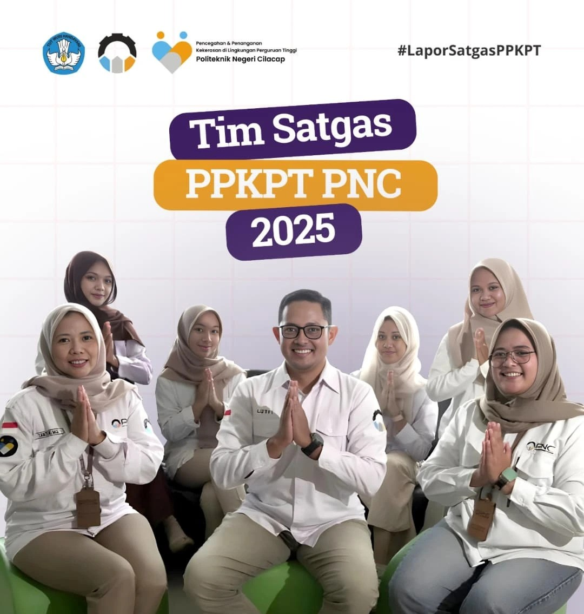

Profil Satgas PPKPT
Mengenal Satuan Tugas Pencegahan dan Penanganan Kekerasan di Politeknik Negeri Cilacap.

Tentang Satgas PPKPT PNC
Satuan Tugas Pencegahan dan Penanganan Kekerasan di Perguruan Tinggi (Satgas PPKPT) Politeknik Negeri Cilacap yang sebelumnya dikenal sebagai Satgas PPKS adalah unit kerja resmi di bawah naungan Direktur PNC.
Dibentuk berdasarkan amanat Permendikbudristek No. 55 Tahun 2024, satgas ini berkomitmen penuh menciptakan kampus yang aman, bermartabat, sehat, dan bebas dari segala bentuk kekerasan seksual, perundungan, maupun intoleransi melalui pendekatan berpihak pada korban (victim-centered).
Visi & Misi
Visi
Terwujudnya lingkungan kampus Politeknik Negeri Cilacap yang aman, inklusif, sehat, serta berkeadaban tanpa kekerasan demi mendukung prestasi civitas akademika.
Misi
- Melaksanakan edukasi dan kampanye anti-kekerasan secara berkala.
- Menyediakan kanal pelaporan yang aman, mudah, dan terjamin kerahasiaannya.
- Memberikan pendampingan psikologis dan advokasi perlindungan korban.
- Memproses laporan secara independen, adil, objektif, dan transparan.